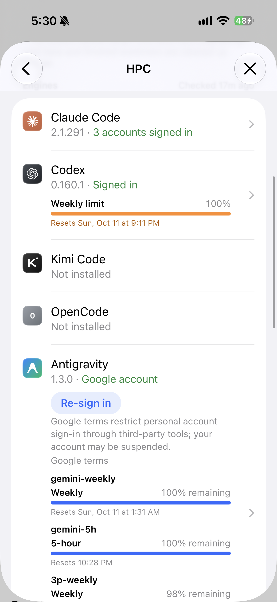

现在 Antigravity 这一行自成一套：状态写「Google account」，行上直接摆着 Re-sign in 按钮和 Google 条款，四条额度全铺开。Claude Code / Codex 的行只说登录状态，点进去才是账号、额度和登录。改后 Antigravity 用同一套：一个 Google 账号时像 Codex（Signed in + 额度），多个时像 Claude Code（N accounts signed in，额度到账号里看）。macOS 是同一套 SwiftUI 页面，改法相同。

A 状态写 Google account，别的引擎写 Signed in。B Re-sign in 直接在行上。C Google 条款也在行上。D 四条额度铺开，行占了大半屏。
① 写 Signed in，和 Codex 一样。② 行上没有按钮和条款了，重新登录、条款都在引擎页（图 2）。额度照旧留在行上——只有一个账号，它就是这台机器的额度。
③ 写 2 accounts signed in，和 Claude Code 一样，行上不放额度：每个账号的额度各是各的，放在一行里会被读成整台机器的。点进去看每个账号。
④ 任何一个账号掉线：写 Signed out（橙色），行上出现 Sign In 胶囊——和 Claude Code / Codex 掉线时一模一样。点胶囊或整行都进引擎页，在掉线那个账号上登录。